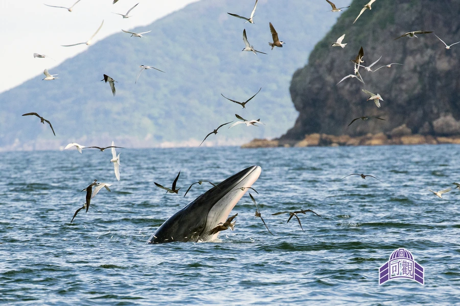

哺乳动物 · 动物界
布氏鲸 Balaenoptera edeni

热带和亚热带海域的中型须鲸，头部有三条平行脊，常在水面突然张口捕食小鱼群，因分类复杂被称为“布氏鲸复合种”。
- 分类
- 门脊索动物门纲哺乳纲目鲸目科须鲸科属须鲸属
- 栖息环境
- 热带和亚热带的表层温暖海域，常靠近鱼群密集处
- 地理分布
- 太平洋、大西洋和印度洋的热带与亚热带海域，中国南海有分布
- 保护级别
- IUCN 无危（LC）；中国国家二级保护动物
物种志
布氏鲸体长 12–15.5 米，体重 15–25 吨，雌性略大。它的身体细长，背部深灰色，腹部颜色较浅，头部有三条平行的纵向脊，从吻端延伸到呼吸孔附近，这是区别于其他须鲸的重要特征；背鳍小而弯曲，位于身体后部。
布氏鲸分布于全球热带和亚热带海域，包括太平洋、大西洋和印度洋的温暖水域，偏好水温 20℃ 以上的海域，常跟随鱼群活动。它以小型鱼类、磷虾和头足类为食，捕食时突然张开大嘴冲出水面，把鱼群连海水一起吞入口中。雌性妊娠期约 11–12 个月，每胎 1 仔，寿命约 50 年。布氏鲸的分类仍有争议，近年学者将其拆分为布氏鲸和埃氏鲸等，目前整体被列为无危。
形态与习性
- 食性小型鱼类、磷虾与头足类
- 体长12–15.5 m
- 体重15–25 t
- 寿命约 50 年
- 繁殖妊娠约 11–12 个月，每胎 1 仔
- 特征头部有三条平行纵脊
趣味知识
- 布氏鲸头部有三条平行纵脊，是识别它的关键特征。
- 它捕食时会突然张口冲出水面，把鱼群连海水吞下。
- 布氏鲸的分类长期有争议，可能包含多个近缘物种。